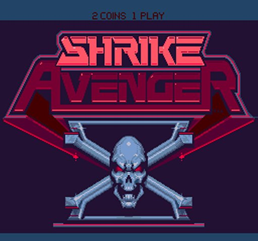
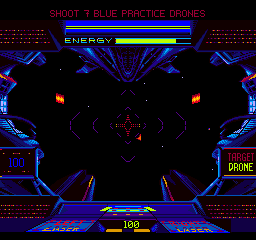
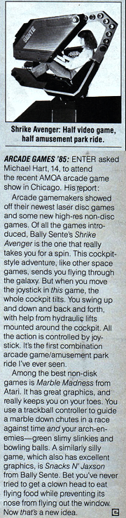
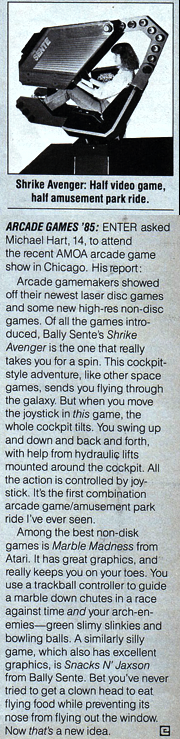

|
  Another game I took over. The person who was running the MIS/IT group was also designing this game. For reasons never fully clear, they decided I could do both those jobs completely (I was doing both jobs), and they decided to keep me doing them both rather than the other person. He was let go (I suspect there were other reasons I was never fully told about) and they gave me Shrike Avenger. Truth be told, this other person had been working on the game for quite some time, and it was not going anywhere. Shrike Avenger was a motion simulator game, a very cool cabinet. I was given 5 to 6 weeks to make it into a game, There was a ton of graphics and there was some thought it should be a Last Starfighter game (not officially of course) so I set out to make this work. I started the game with target drones, then a few fighters, then more fighters which are larger. You were SUPPOSED to attack the mother ship last, knock out the 4 engines and 8 guns, and then hit it in the middle to blow it up. We never got the mother ship working because of time. But it was fun to toss people around every time a ship hit the player. There were a few problems. This was a BIG game. It had to large, very powerful linear actuators to move it. We had 4 to 6 safety devices on the motion system: 2 sets of hardware limit switches, software limits on motion, software readable limit switches, and safety cables. Yet after all that, we still managed to flip a game over and drop a kid almost on his head. Needless to say, given the cost, we did not build many. Shrike Avenger was one of the first games to charge $1.00 a game, and when we put it out on test at Great America, it earned VERY well! People played it ALL the time. And given that the park was not open as long as many arcades, and that people had already paid to get into the park, and that there were "free" roller coaster near by, I was surprised that it actually did as well as it did. KLOV entry for Shrike Avenger |


 

|